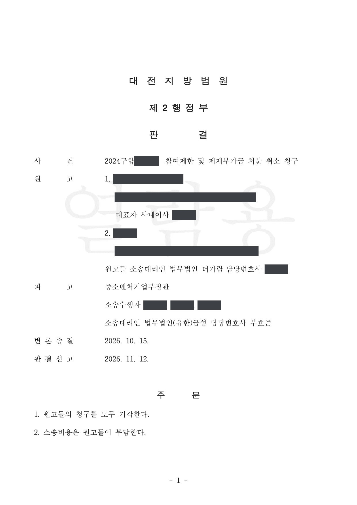

국가연구개발사업 중복 과제 신청을 이유로 한 참여제한·제재부가금 부과처분 취소소송
대전지방법원 · 담당변호사 부효준
판결문

사건의 요지
먼저 협약을 맺은 과제와 개발내용이 겹치는 과제를 다른 지원사업에 신청하면서 중복지원 사항이 없다는 확인서를 낸 연구개발기관과 대표자에 대한 2년의 참여제한처분과 제재부가금 부과처분에 관하여, 두 과제의 중복성과 「국가연구개발혁신법」 제31조 제1항 제5호의 '거짓이나 그 밖의 부정한 방법으로 연구개발과제를 신청한 행위' 해당 여부, 협약 전 중복성 검토 의무와 신뢰보호·비례원칙 위반 여부가 다투어진 사건입니다. 전문가 평가단의 중복성 판단이 존중되어야 한다는 이유로 처분이 모두 적법하다고 판단되었습니다.
주제별 사례참여제한처분 취소소송제재부가금 부과처분
사건의 주요 내용
산업기계 납품업을 하는 원고 회사는 2021년 6월 구매연계형 기술개발 지원사업의 과제(선박용 스테인리스 배관 자동용접시스템 개발, 2년)에 선정되어 전문기관과 협약을 맺었습니다. 그 바로 다음 날 원고 회사는 산학연 협력 기술개발 지원사업에 낸 다른 과제(소구경 배관용 자동용접시스템 국산화 개발)에 관하여 '기지원·기개발 및 중복지원 사항이 없다'는 취지의 확인서를 제출하였고, 같은 달 이 과제에 대하여도 협약을 맺었습니다.
전문기관은 2021년 12월 뒤의 과제를 특별점검한 뒤 특별평가 대상으로 통보하였고, 특별평가위원회는 2022년 7월 이 과제가 먼저 협약한 과제와 중복된다고 보아 '중단'으로 판정하였습니다. 원고들의 이의신청에 대하여도 2022년 10월 같은 판정이 유지되었습니다.
처분청은 2023년 8월 제재처분평가단 심의를 거쳐 제재처분을 사전통지하였고, 원고들이 요청한 연구자권익보호위원회의 재검토에서도 2024년 1월 처분사유와 양정이 타당하다는 결론이 나왔습니다. 처분청은 2024년 2월 국가연구개발혁신법 제32조 제1항 제3호, 제31조 제1항 제5호에 따라 원고 회사와 대표자에게 각 2년의 참여제한처분을, 원고 회사에 8천만여 원(지급된 정부지원 연구개발비에서 회수금과 민간 추가납부금을 뺀 금액)의 제재부가금 부과처분을 하였고, 원고들은 그 취소를 구하는 소송을 제기하였습니다.
원고의 주장
- 두 과제는 대상 배관의 구경·재질과 장비 형식 등 개발목표가 다르고, 성능지표와 측정방법, 통합제어기, 전원, 통신방식, 구동모터, 와이어 공급장치 등 개발방법과 개발내용도 다르므로 중복 과제가 아니라고 주장하였습니다.
- 앞의 과제는 수요처의 요청에 따른 것이고 뒤의 과제는 앞서 수행한 예비연구를 사업화하려는 것이었으며, 확인서는 협약 변경으로 개발 범위가 줄어들기 전에 낸 것이어서 중복에 대한 인식이 없었으므로 '거짓이나 그 밖의 부정한 방법'으로 과제를 신청한 것이 아니라고 주장하였습니다.
- 협약 체결 전에 중복성을 검토할 의무는 처분청과 전문기관에 있고, 원고들은 협약 변경에 대한 전문기관의 승인을 신뢰하였으며, 과제 내용을 변경하게 하거나 참여제한 없이 출연금만 회수할 수도 있었으므로, 처분은 의무 위반을 탓할 수 없는 정당한 사유가 있는데도 이루어진 것으로서 신뢰보호원칙과 비례원칙에 반한다고 주장하였습니다.
부효준 변호사의 주장
- 공학박사·변리사·회계사로 구성된 특별평가단이 전원 일치로 두 과제의 중복성을 인정하였고, 그 판단이 이의신청 평가와 연구자권익보호위원회 재검토에서도 그대로 유지되었으므로, 고도의 전문적·기술적 사항에 관한 이 판단은 존중되어야 한다고 주장하였습니다.
- 두 과제의 연구개발계획서를 대조하여, 먼저 협약한 과제의 1차년도 목표가 뒤의 과제 목표와 같은 소구경 배관용 개방형 자동용접시스템 개발이고, 수요처와 매출계획의 근거도 같으며, 장비 사진과 제어시스템 구성·통신방식에 관한 설명자료도 대부분 같다는 점을 밝혔습니다. 원고들이 차이점으로 든 전원·통신방식·구동모터는 앞의 과제 최종보고서의 기재와 다르고, 일체형 와이어 공급장치는 신청 당시 계획서에 없다가 특별평가 대상 통보 뒤에 개발된 것이라는 점도 지적하였습니다.
- 원고들은 먼저 협약을 맺어 같은 개발내용에 대한 지원을 받기로 한 상태에서 중복지원 사항이 없다는 확인서를 제출하였으므로 중복에 대한 인식이 있었고, 처분은 시행령 [별표 6]·[별표 7]의 기준대로 이루어졌으며, 중복성이 인정되는 부분은 협약 변경과 무관하게 처음부터 원고들이 계획한 부분이어서 신뢰보호원칙이 문제될 여지가 없다고 주장하였습니다.
법원의 판단
법원은 행정청이 고도의 전문적·기술적 사항에 관하여 한 전문적 판단은 사실인정에 중대한 오류가 있거나 객관적으로 불합리·부당하다는 등의 특별한 사정이 없는 한 존중되어야 한다는 대법원 판례를 기준으로 삼았습니다. 법령이 정한 자격을 갖춘 평가단이 전원 일치로 중복성을 인정하였고 이의신청과 연구자권익보호위원회 재검토의 결과도 같았으므로, 처분청의 중복성 판단은 존중되어야 한다고 보았습니다.
원고들이 든 차이점에 관하여는, 두 과제의 연구개발계획서와 최종보고서를 대조하여 개발목표가 배관의 구경·재질에 따른 차이 없이 같고, 핵심 개발내용과 개발방법도 사실상 같거나 거의 유사하다고 판단하였습니다. 성능지표의 차이는 중복성 판단의 핵심적인 차이가 아니고, 신청 뒤에 개발된 장치는 신청 당시의 부정행위 여부와 직접 관련이 없다고 하였습니다. 또 먼저 협약을 맺은 상태에서 지원을 받고 있지 않은 것처럼 확인서를 낸 이상 중복에 대한 인식도 있었다고 보아, 국가연구개발혁신법 제31조 제1항 제5호의 처분사유를 인정하였습니다.
재량권에 관하여는, 처분청 측이 협약 전 중복성 검토를 일부 소홀히 하였더라도 원고들의 확인서 제출이 없었다면 협약 체결에 이르지 않았을 것이므로 의무 위반을 탓할 수 없는 정당한 사유가 되지 않고, 중복되는 부분은 원고들이 처음부터 스스로 계획한 것이어서 신뢰보호원칙 위반도 아니라고 하였습니다. 처분이 시행령의 기준에 따른 것이고 참여제한은 정부연구개발비를 지원받을 기회를 제한하는 데 그친다는 점 등을 들어 비례원칙 위반도 부정하고, 원고들의 청구를 모두 받아들이지 않았습니다.
행정청이 관계 법령이 정하는 바에 따라 고도의 전문적이고 기술적인 사항에 관하여 전문적인 판단을 하였다면, 판단의 기초가 된 사실인정에 중대한 오류가 있거나 판단이 객관적으로 불합리하거나 부당하다는 등의 특별한 사정이 없는 한 존중되어야 한다(대법원 2022. 9. 16. 선고 2021두58912 판결 참조).
대전지방법원 판결 이유 '4. 가. 처분사유의 부존재 주장에 대한 판단 — 1) 관련 법리'
설령 원고들의 주장대로 이 사건 각 과제의 개발방법 및 개발내용에 그 밖의 나머지 일부 차이가 존재한다고 하더라도, 중복 과제에 대하여 제재처분을 하도록 한 취지는 '한정된 정부출연금의 공정하고도 효율적인 분배'에 있으므로, 반드시 새로운 과제와 기존 과제의 모든 부분이 완전하게 일치하여야만 중복 과제에 해당한다고 볼 것은 아니고, 새로운 과제의 상당 부분이 기존 과제의 내용과 중복되어 정부출연금의 분배에 지장이 생긴다고 볼 수 있다면, 새로운 과제는 기존 과제와 중복 과제에 해당한다고 볼 수 있는 점, 앞서 살펴 본 바와 같이 이 사건 산학연 과제의 상당 부분이 이 사건 구매조건부 과제의 내용과 중복되고, 그로 인하여 소구경 배관에 대한 Open Type 자동용접시스템 개발과 관련한 한정된 정부출연금의 공정하고도 효율적인 분배에 지장이 야기된 점 등을 종합하면, 이 사건 각 과제는 중복 과제에 해당한다고 봄이 타당하다.
대전지방법원 판결 이유 '4. 가. 2) 구체적 판단 나) (3)'
또한 원고들은 이 사건 산학연 사업에 관한 협약이 변경되기 전 위 협약을 최초 체결할 당시부터 이 사건 산학연 과제를 통해 이 사건 구매조건부 과제와 마찬가지로 Open Type 자동용접시스템을 개발하고자 하였던 점, 원고들이 이 사건 산학연 사업에 관한 협약을 최초 체결할 당시에는 이미 이 사건 구매조건부 사업에 관한 협약이 체결되어 Open Type 자동용접시스템 개발에 관한 지원을 받기로 한 상태였고, 그럼에도 불구하고 원고들은 마치 Open Type 자동용접시스템 개발에 관한 지원을 받고 있는 사실이 없는 것처럼 이 사건 확인서를 제출한 점 등을 종합하면, 원고들에게는 이 사건 확인서 제출 시 이 사건 각 과제의 중복성에 대한 인식이 있었다고 봄이 타당하다.
대전지방법원 판결 이유 '4. 가. 2) 구체적 판단 나) (4)'
※ 판결 이유 가운데 이 사건의 판단 기준이 된 부분을 그대로 옮긴 것으로, 당사자 이름 등은 가리고 금액은 어림으로 적었습니다.
이 사건이 보여 주는 것
비슷한 시기에 여러 지원사업에 과제를 신청할 때, 새 과제가 이미 협약한 과제와 완전히 같아야만 중복 과제가 되는 것은 아닙니다. 법원은 새 과제의 상당 부분이 기존 과제와 겹쳐 한정된 정부출연금의 공정하고 효율적인 분배에 지장이 생기면 중복 과제로 볼 수 있다고 하였고, 그 판단은 신청 당시의 연구개발계획서를 기준으로 이루어졌습니다. 신청 뒤에 개발 범위나 장치를 달리하였다는 사정은 결론을 바꾸지 못하였습니다.
중복지원 사항이 없다는 확인서는 형식적인 서류가 아닙니다. 겹치는 과제로 이미 지원을 받기로 한 상태에서 이를 밝히지 않고 확인서를 내면 '거짓이나 그 밖의 부정한 방법으로 연구개발과제를 신청한 행위'로서 부정행위가 될 수 있고, 처분청이나 전문기관이 협약 전에 중복성을 충분히 걸러 내지 못하였다는 사정은 제재를 면하는 사유로 받아들여지지 않았습니다. 전문가 평가단의 중복성 판단이 이의신청과 재검토를 거쳐 유지된 경우 법원이 이를 존중한다는 점도 확인됩니다.
관련 법령국가연구개발혁신법 제14조 제1항, 제15조 제1항·제2항, 제31조 제1항 제5호, 제32조 제1항 제3호·제2항 · 국가연구개발혁신법 시행령 제59조 제1항 [별표 6]·[별표 7] · 중소기업기술개발 지원사업 운영요령 제10조 · 중소기업기술개발 지원사업 관리지침 '중소기업 기술개발 과제의 중복성 검토기준·방법'
관련 단어참여제한 2년제재부가금중복 과제과제 중복성거짓이나 그 밖의 부정한 방법부정행위중복지원 여부 확인서특별평가과제 중단연구자권익보호위원회전문적 판단 존중신뢰보호원칙비례원칙재량권 일탈·남용국가연구개발혁신법 제31조 제1항 제5호처분 적법
비슷한 처분을 받으셨다면
국가연구개발 제재처분은 사전통지를 받은 날부터 20일 이내에 재검토 요청 의견을 내고, 처분이 있음을 안 날부터 90일 이내에 취소소송을 제기해야 합니다. 처분서나 사전통지서를 받은 날짜부터 확인해 드립니다.